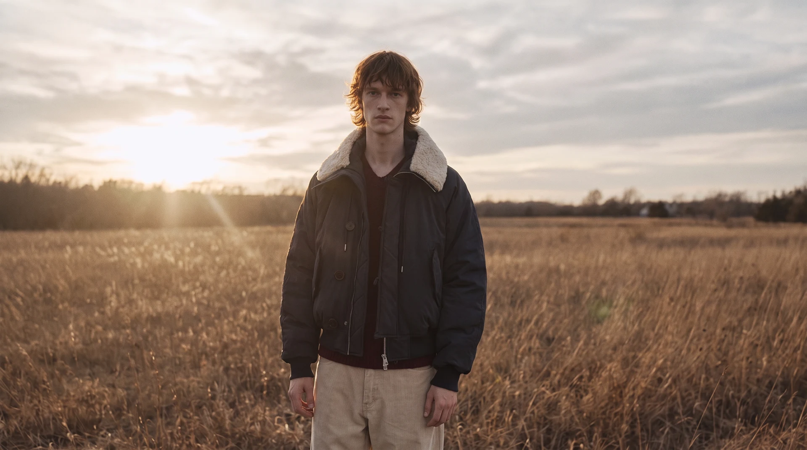

패션 캠페인과 광고
의상 실루엣과 소재 표현, 스타일링을 브랜드의 메시지와 연결합니다. 콘셉트 기획부터 AI 비주얼 생성, 편집까지 활용 매체에 맞는 제작 방향을 정합니다.
AI 광고·브랜드 필름 제작 안내GRaY D. Lab · FOUNDER & CREATIVE DIRECTOR
패션 산업의 경험을
AI 브랜드 영상으로 연결합니다.
GRaY D. Lab 설립자·대표 / 크리에이티브 디렉터
감우식(Kris W)은 한국과 해외에서 패션 브랜드 크리에이티브 디렉터로 오랜 기간 활동해 온 패션 디자이너 출신 AI 패션 콘텐츠 기획자이자 디렉터입니다.
브랜드 기획과 디자인 디렉팅 경험을 바탕으로 생성형 AI 기술을 활용해 브랜드의 정체성과 세계관을 시각화하며, AI 패션 영상·광고 콘텐츠의 기획부터 제작까지 총괄합니다.
현재 GRaY D. Lab 대표·크리에이티브 디렉터이자 한국 AI 크리에이터 협회 패션분과장으로 활동하고 있습니다.
의상 실루엣과 소재 표현, 스타일링을 브랜드의 메시지와 연결합니다. 콘셉트 기획부터 AI 비주얼 생성, 편집까지 활용 매체에 맞는 제작 방향을 정합니다.
AI 광고·브랜드 필름 제작 안내가상 모델과 착장, 무대와 움직임을 활용해 컬렉션을 소개합니다. 의상 표현과 컷 사이의 연결감을 함께 검토합니다.
AI 패션쇼 · 화보·룩북영상의 분위기와 편집은 실제 포트폴리오에서 확인할 수 있습니다. 사례별 담당 범위와 시안·프리뷰 여부를 구분해 안내합니다.

공개 포트폴리오 · 디렉터스 컷
제품 광고, 패션 캠페인, 리테일·OOH 영상 등 실제 제작 사례와 담당한 작업을 확인하세요.
패션 브랜드의 콘셉트와 디자인을 검토해 온 경험을 AI 콘텐츠 기획과 연출에 활용합니다.
주식회사 어반유니온의 의뢰로 패션 유통 분류체계의 여성복 분야 집필에 참여했습니다. 작업은 2021년 하반기부터 2022년 1월까지 진행했습니다.
AI 패션 및 생성형 디자인 관련 강의와 교육 활동을 진행합니다. 패션 기획과 콘텐츠 제작 경험을 바탕으로 생성형 AI를 실무에 연결하는 방향을 다룹니다.
GRaY D. Lab을 설립했습니다. 첫 프로젝트는 신세계백화점 타임스퀘어의 가상 패션쇼 영상 5편 제작입니다.
초기 프로젝트는 회사의 제작 경험을 보여주는 기록으로 소개하고, 현재의 영상 표현과 제작 방식은 최근 포트폴리오로 안내합니다.